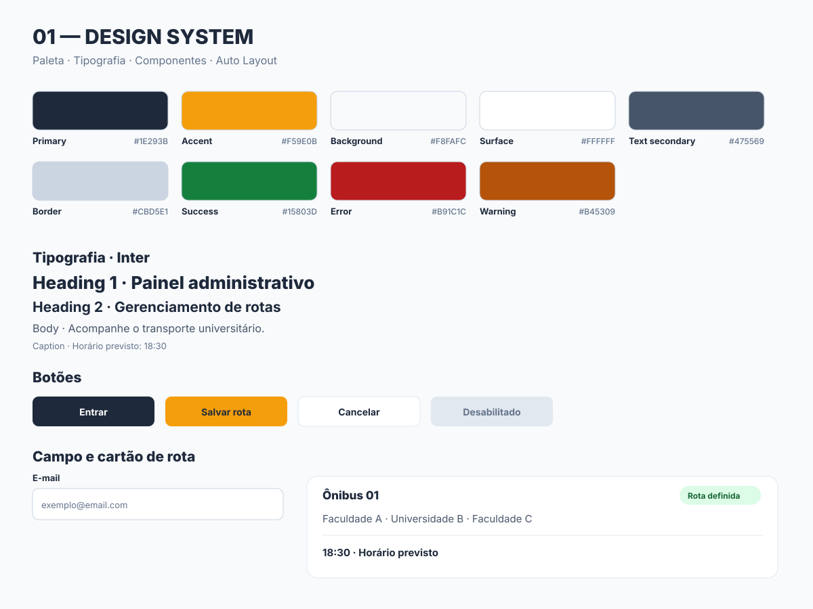

01 Paleta Tipografia Componentes
Material acadêmico baseado no site demonstrativo fornecido. Telas em SVG editáveis e organizadas para as seis páginas do Figma. Clique em cada tela para abrir seu SVG original. A navegação funcional está no HTML.
▶ Abrir demonstração navegável